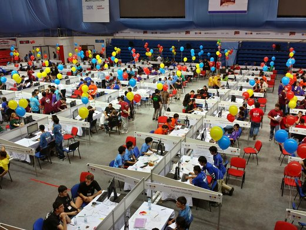
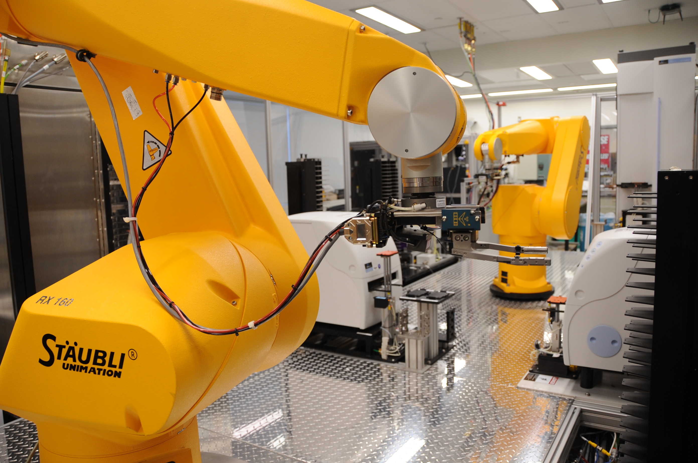

Projects

Offline Judge: Competitive Programming CLI
A command line tool to scrape, test, and return results for competitive programming problems locally.
Assembly x86 Bootloader From Scratch
A low-level Assembly bootloader for x86 architectures.

SURGE: Sequential Reinforcement Graph Agent
Applying reinforcement learning and graph neural networks to design drug-like molecules for high throughput screening.
Mar 2025 – Present
Distributed Blockchain Database for Decentralized Storage and Retrieval
Jan 2024 – Apr 2024
Fine-Tuned Audio Transformers for Robust Identification of Stuttering in Child Speech
Sep 2021 – Mar 2022
Novel Feature Extraction and Noise Removal Techniques for Imagined Speech Decoding with Deep Learning
Nov 2024 – Dec 2024
Correlation-Driven Feature Extraction for S&P 500 Prediction with Machine Learning